西部计划志愿者出发
独立完成现场镜头拍摄与全片剪辑，负责封面设计及发布优化；成片在江苏共青团微信视频号官方账号发布并署名。
- 现场拍摄
- 全片剪辑
- 封面设计
- 发布优化
我是耿王璟，视觉传达设计专业。以政务新媒体实习为核心， 将文字策划、视频制作、视觉设计与平台运营连接成完整内容链路。
新媒体运营｜2026.07—至今
工作定位
负责微信视频号、B站等平台的选题分析与运营维护，承担拍摄、视频剪辑、字幕、 封面设计及发布优化；节点内容按官媒规范核验素材来源、字幕用语与画面表达。
视觉传达设计｜2027年毕业
专业前10%
Illustrator / Lightroom / 剪映
可立即到岗
点击播放。页面默认仅加载封面，减少首次打开等待时间。
独立完成现场镜头拍摄与全片剪辑，负责封面设计及发布优化；成片在江苏共青团微信视频号官方账号发布并署名。
参与脚本与采访提纲沟通，负责现场拍摄、课程内容剪辑、字幕包装及发布封面设计。
独立完成史料搜集、内容结构、视频剪辑与封面设计，按官媒规范核验素材来源、字幕用语与画面表达。
以真实历史影像为基础完成结构梳理、成片剪辑与视觉包装，并核对来源、用语和画面表达。
从采访、素材整理到成稿，署名和发布页面均可核验。
金审青年｜2026.08.04｜原创
围绕暑期实习实践组织人物与工作内容，以青年视角呈现从策划、拍摄到剪辑的成长过程。
文字：耿王璟 图片：耿王璟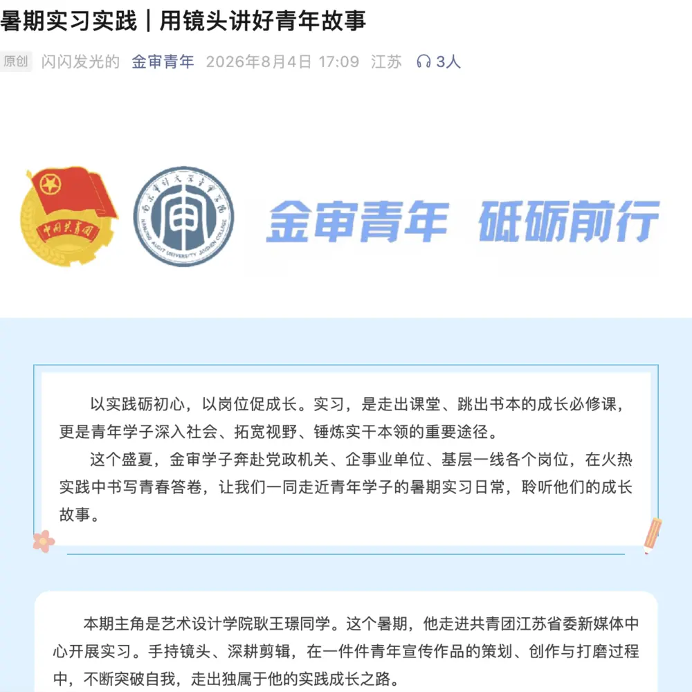
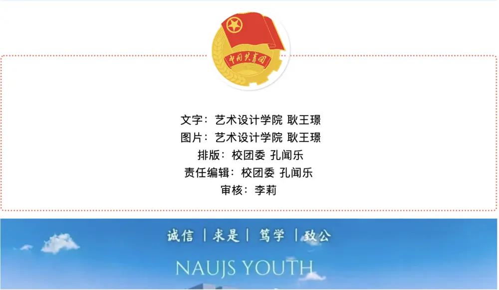
学校官网 / 中国网｜2026.05.29
记录心理健康特色活动，将现场信息、活动过程与社会价值整理为适合公开发布的图文稿件。
耿王璟/图 耿王璟/文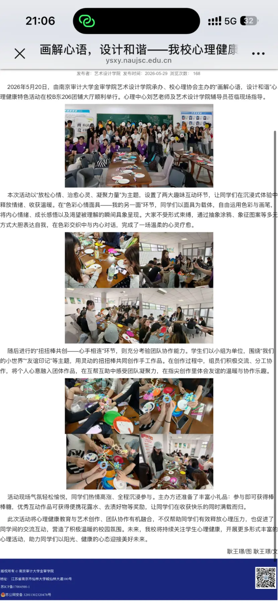
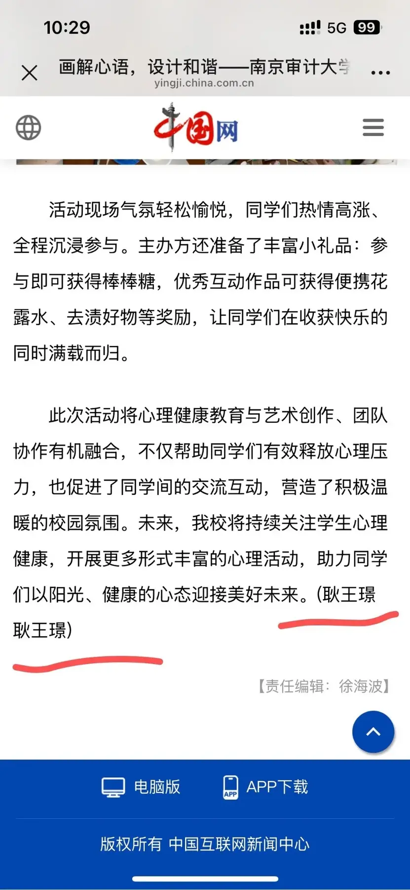
不拆成零散单页，以完整案例板呈现规范、空间和应用。
从标志规范延伸至服饰、户外广告、导视、车辆与随行用品，建立一致的户外品牌语言。
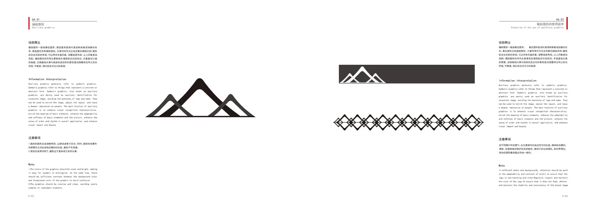
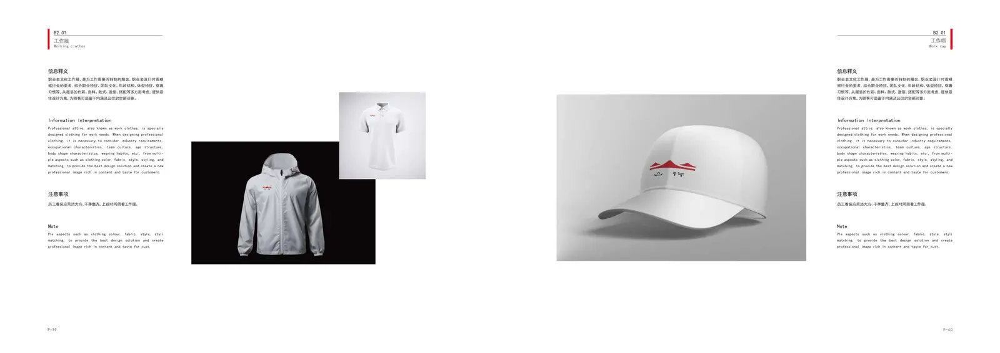
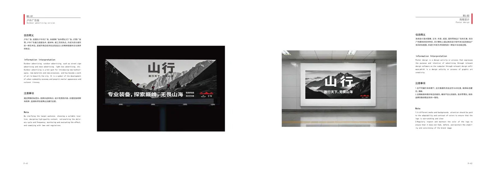
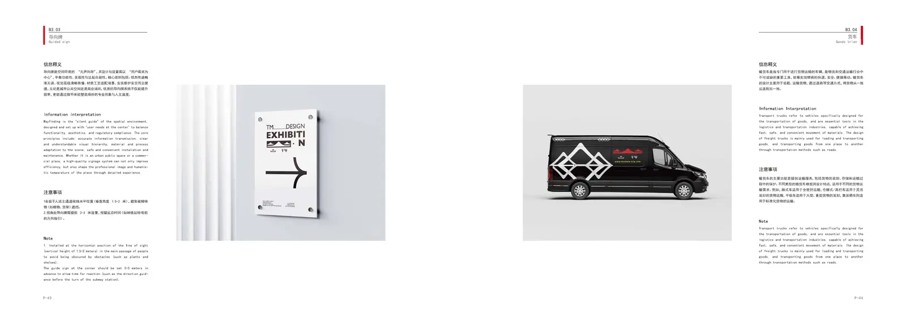
以克制的黑白灰和少量红色构建统一视觉场，覆盖品牌识别、宣传册、空间和服务流程。
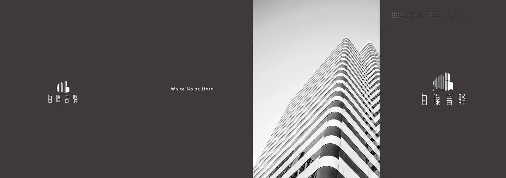
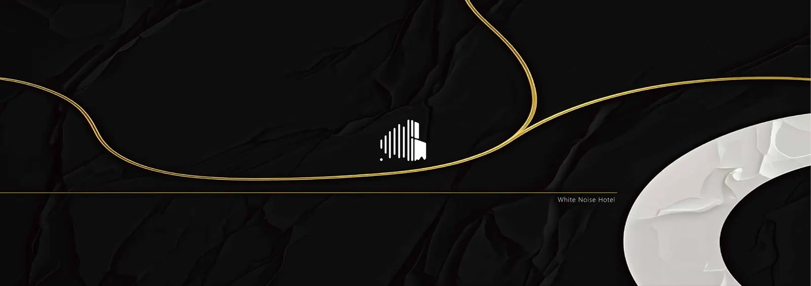
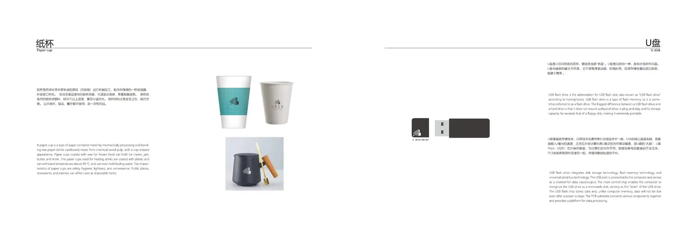
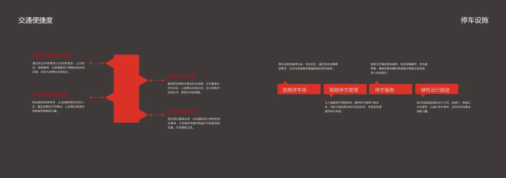
保留作品完整比例，以成组叙事呈现设计能力。
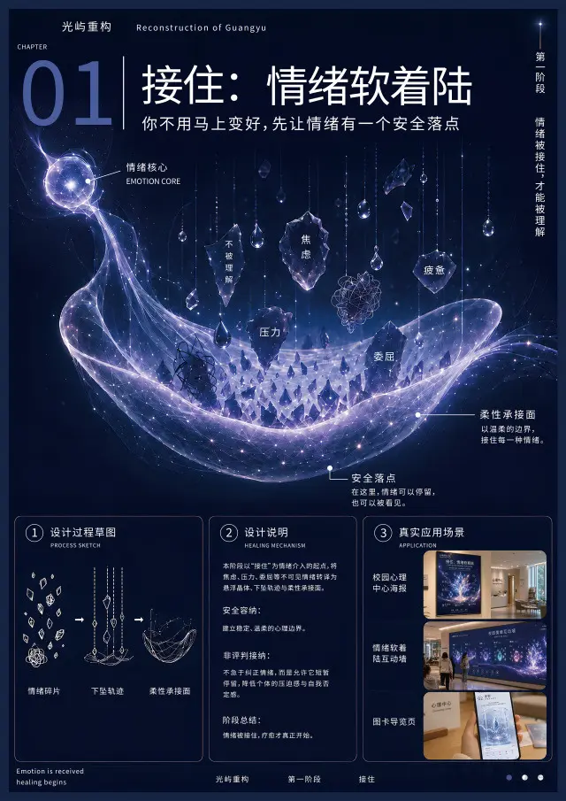
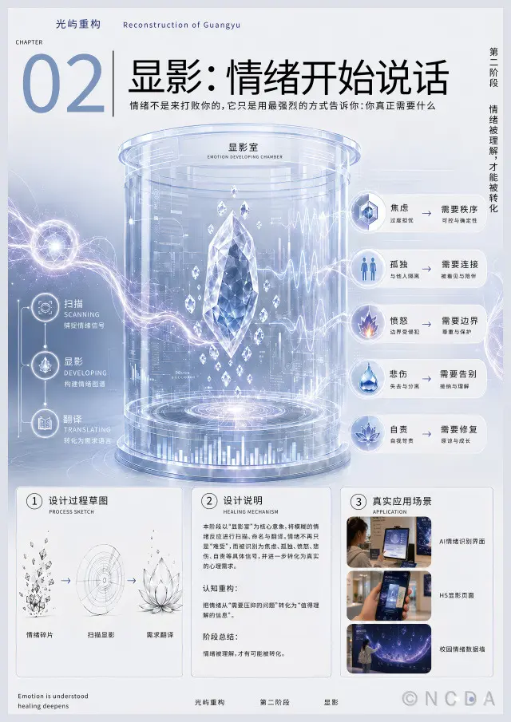
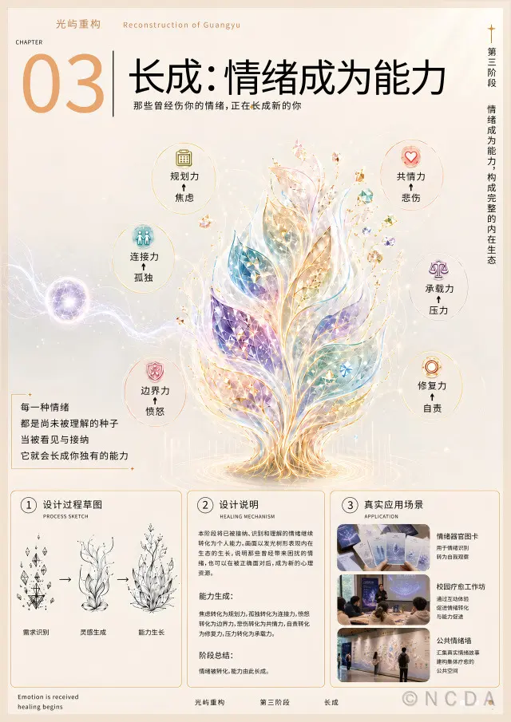
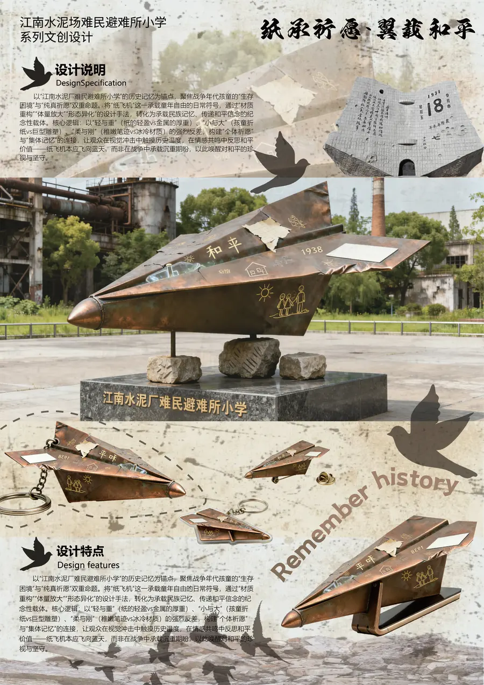
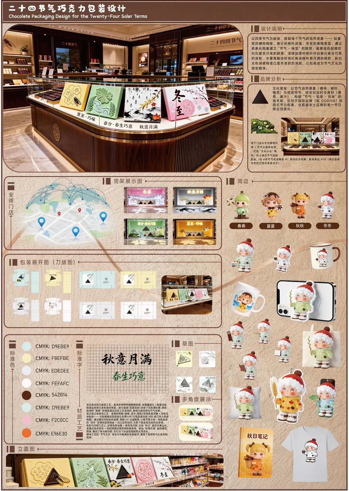
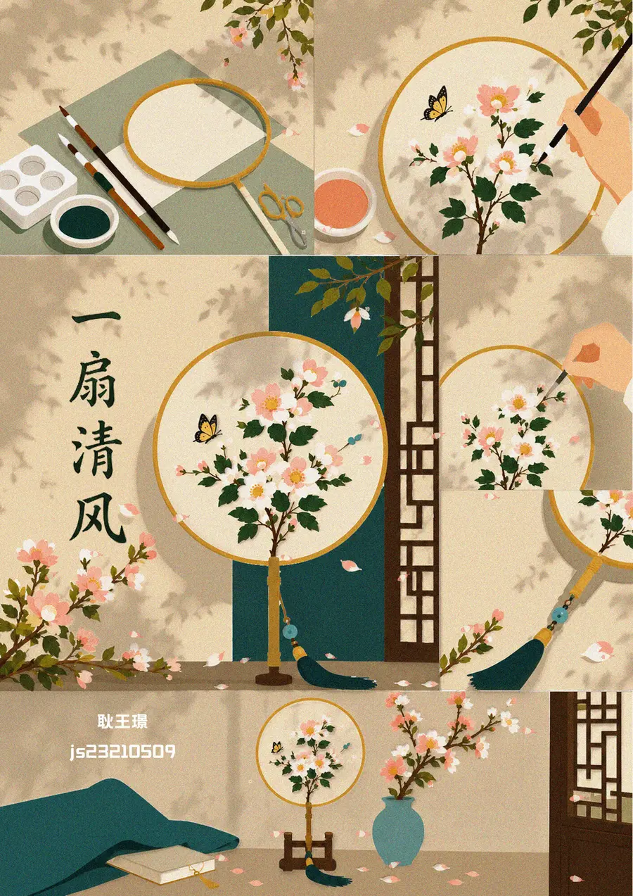